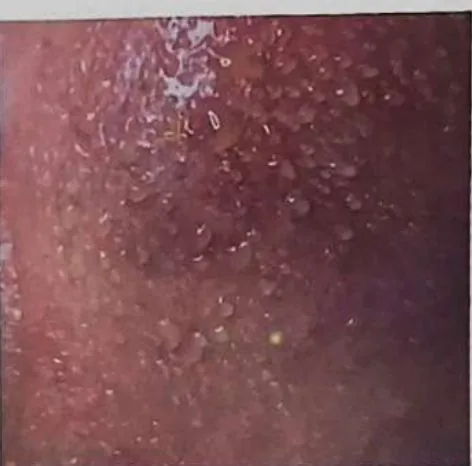
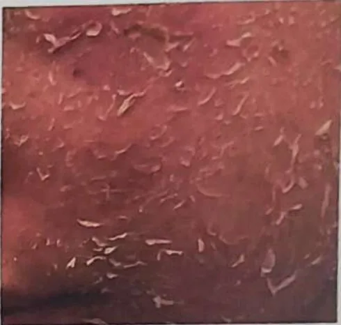

Steroid face (steroid-induced dermatitis)
Red, thin, sensitive skin on the face that can follow long use of steroid creams
What it is
Steroid creams are useful medicines when a doctor advises them. Used on the face for a long time, they can leave the skin red, thin and easily irritated, with a burning feeling and small bumps.
- Face skin
- After steroid cream use
- Burning, stinging, tight
- Which doctor
- Skin doctor (dermatologist), family doctor
- Common in
- People who use steroid creams on the face for a long time
- Contagious
- No
- Course
- Can take weeks to months to settle, sometimes with flares; a skin doctor can guide you
Common signs

Red rashRash Pimples and breakoutsAcne 
Dry, flaky skinXerosis (dry skin) 
Itchy skinPruritus
Signs of steroid-damaged skin
Redness and flushing 
Dryness, peeling and stinging 
Bumps and breakouts
Keep taking your normal medicine and keep seeing your doctor. Our session is a gentle support and does not replace medical care.
About steroid-damaged skin
It comes from using steroid creams wrongly, or cosmetics secretly mixed with steroids. The skin becomes dependent and symptoms come back until the barrier is repaired.
Stopping steroids must be guided by a doctor. See a doctor first, then add gentle barrier care.
Keep taking your normal medicine and keep seeing your doctor. Our session is a gentle support and does not replace medical care.
3 stages of sensitive skin

Mild: thin skin, red cheeks like blush, dry and red when the weather changes 
Moderate: flushing, burning, itching or stinging, small bumps 
Severe: swelling, heat, large red areas, rashes; see a doctor first
Sensitive skin or allergy?
- Sensitive skin over-reacts to weather, cosmetics or cleansers
- An allergy is the body reacting to one substance (food, medicine, pollen): find it and see a doctor
Barrier care tips
- Wash with water or a gentle cleanser; pat dry, don't rub
- Avoid soap, acids, alcohol and fragrance on the face
- No scrubs or face massage while the skin is sensitive
- Repair takes about 1 to 6 months; be patient
- Use sunscreen and moisturiser daily; avoid saunas and very hot water
Why it happens
- Using steroid creams on the face for a long time or too often
- Strong steroid creams on the thin skin of the face
- Some skin-lightening or quick-fix creams may contain steroids not shown on the label
- Using a steroid cream for acne, redness or a rash without knowing the cause
- The skin may flare when the cream is stopped, so people keep using it
See a doctor first if
- Swelling of the face, lips or tongue, or trouble breathing: call 999
- Sudden loss of vision or severe eye pain: go to hospital now
- Skin that oozes, crusts or hurts a lot, or a rash with fever: see a doctor promptly
- Redness, burning or breakouts that keep getting worse or do not settle: see a skin doctor
- A strong flare when you use the cream less or stop it: see your doctor, do not decide alone
If any apply, please see a doctor before a session.
This page is general information. Please keep taking your normal medicine and keep seeing your doctor.
Keep taking your normal medicine and keep seeing your doctor. Our session is a gentle support and does not replace medical care.
Looking after yourself

Wash gently and pat dryGentle skin hygiene
More ways to look after yourself
- Do not start, stop or change a steroid cream on your own: ask your doctor first
- Bring all your face creams to the doctor, even ones bought in a shop or online
- Protect your face from strong sun with shade or a hat
- Skip scrubs, harsh products and heavy make-up while the skin is sore
Tell your therapist
- Broken, red or sore skin
- A severe allergy
- Pregnancy
- Pacemaker or metal implant
Your therapist will go through this with you before starting.
Questions and answers
What is Steroid face (steroid-induced dermatitis)?
Red, thin, sensitive skin on the face that can follow long use of steroid creams. Steroid creams are useful medicines when a doctor advises them. Used on the face for a long time, they can leave the skin red, thin and easily irritated, with a burning feeling and small bumps.
What are the common signs of Steroid face (steroid-induced dermatitis)?
Red rash · Pimples and breakouts · Dry, flaky skin · Itchy skin
Why does Steroid face (steroid-induced dermatitis) happen?
Using steroid creams on the face for a long time or too often · Strong steroid creams on the thin skin of the face · Some skin-lightening or quick-fix creams may contain steroids not shown on the label · Using a steroid cream for acne, redness or a rash without knowing the cause · The skin may flare when the cream is stopped, so people keep using it
How can I look after myself with Steroid face (steroid-induced dermatitis)?
Wash gently and pat dry
Can an AI Body Master session help with Steroid face (steroid-induced dermatitis)?
A session is gentle, needle-free meridian support for your wellbeing. It does not treat or cure Steroid face (steroid-induced dermatitis) and never replaces your medicine or your doctor. Tell your therapist about it before the session starts.
Related conditions
References: General information based on public health sources such as Mayo Clinic, NHS, Cleveland Clinic and NCBI StatPearls.
Page updated: 2026-11-01